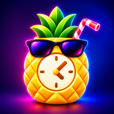

FunTime
Anote bebidas e acompanhe seus intervalos.
Verificando…
Aguarde um instante.

Preparando o app…
Abrir FunTime 2 Abrir versão anterior App para estudo · não é controle de segurançaAnote bebidas e acompanhe seus intervalos.
FunTime · Projeto de estudo
Um projeto para estudo de programação e fins acadêmicos e didáticos. Anote bebidas e acompanhe intervalos que você configura.
Uso pessoal
Registros
Preferências
Adicione uma bebida para começar.
Os consumos anotados aparecerão aqui em ordem cronológica.
Aparência
Privacidade
Bloqueie o App com biometria ou PIN personalizado de 4 digitos.
Biometria/bloqueio do aparelho é validado pelo próprio sistema. O app não recebe sua impressão digital, rosto ou PIN do aparelho.
Esta versão protege o acesso pela interface. A criptografia completa dos dados locais será tratada separadamente.
Bebidas
Transfira somente a lista e as configurações das bebidas. O histórico não faz parte deste arquivo.
Backup e restauração
O backup inclui bebidas, histórico e preferências. PIN, biometria e bloqueio deste aparelho não entram no arquivo.
Ative, volte ao cadastro e repita o gesto que falha. Depois retorne aqui para desativar e exportar o relatório.
Somente eventos de toque/mouse e informações do navegador e da tela. Não inclui bebidas, ícones, histórico, PIN ou campos digitados. Fica na memória até fechar ou recarregar. Para automaticamente em 10 minutos ou 1.500 eventos. Reativar inicia um novo registro.
Desativado
Estas ações exigem confirmação e PIN ou autenticação do aparelho. Exclusões não podem ser desfeitas; faça um backup antes, se precisar.
Suas ocasiões